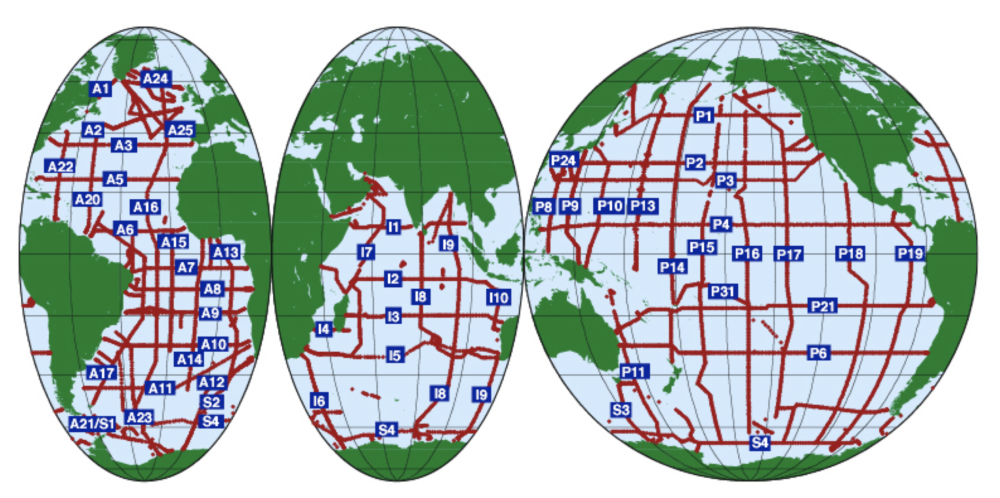

Mini project#
Choose between:
Review of a pair of published papers (written report)
Data project - using Java Ocean Atlas or other (presentation, written report)
Assessment:
For the paper review, it will be assessed on the basis of the written report - for organisation, content and reference style. It will not be assessed for English spelling or grammar.
For the data project, the assessment will be based both on a presentation (5-7 minutes) which will be assessed for organisation, legibility and style and a short written report - for organisation, content and figure legibility/style.
Review of a publication (write a short paper)#
Length: about 1000 words plus references (3-4 pages double-spaced) at most and a short presentation (5-7 minutes). Follow basic standards for citations within the text and for references. A good style to use is the AGU journal style, which has instructions here: https://publications.agu.org/author-resource-center/
Pick a topic that you’re interested in and that falls into the range of topics covered in Regional Oceanography. For topics we haven’t yet covered, you can use the syllabus to identify them (e.g., Sverdrup balance, Eastern boundary upwelling, surface mixed layer processes, ocean ventilation). One paper should be older (before 2005 and highly cited, or a chapter in a book) and the other should be more recent (since 2010, and a peer-reviewed journal article, not Wikipedia or another web source).
Review both papers with special attention to what they found about the ocean in the earlier paper that sets the stage for new findings.
Citations within text: Use inline citations to your references using a format such as (Lastname, 1998) or (Lastname1 & Lastname2, 1998) or (Lastname et al., 1998).
References: Conclude your paper with a reference section using standard citation style. For references that are only online, follow standard practices for citing websites.
Data project#
Length: about 700 words plus figures (4-10) at most and a short (5-7 minute) presentation.
Pick a topic that you’re interested in and that falls into the range of topics covered in Regional Oceanography. For topics we haven’t yet covered, you can use the syllabus to identify them (e.g., Sverdrup balance, Eastern boundary upwelling, surface mixed layer processes, ocean ventilation).
For projects using JOA, you will probably find it is easier to pick a topic that is large-scale (gyres or ventilation) rather than small scale (surface mixed layer processes). Hydrographic data are best (highest quality) along repeat hydro sections as shown here: 
These are repeated roughly every 10 years, which would make it relatively straightforward to look for decadal change in seawater characteristics.
A few ideas (and we can discuss):
Trace a watermass or oceanographic feature away from its source. This would be watermass analysis using sections and T-S diagrams, to see how the properties change in space.
Compare gyres in two ocean basins for their structure (from which you can use geostrophy to describe general features of the circulation) or properties. E.g. Labrador Sea vs Sea of Okhotsk or Labrador Sea vs Gulf of Lions (two places which have deep ocean convection), or subtropical North Atlantic vs subtropical South Atlantic.
Examine seasonal changes using World Ocean Atlas data.
See available data here: https://joa.ucsd.edu/Data_homepage
You may also opt to use another tool to examine data. Please verify that you are able to make plots in basic styles (sections, T-S plots, profiles). I can help you find data sources.